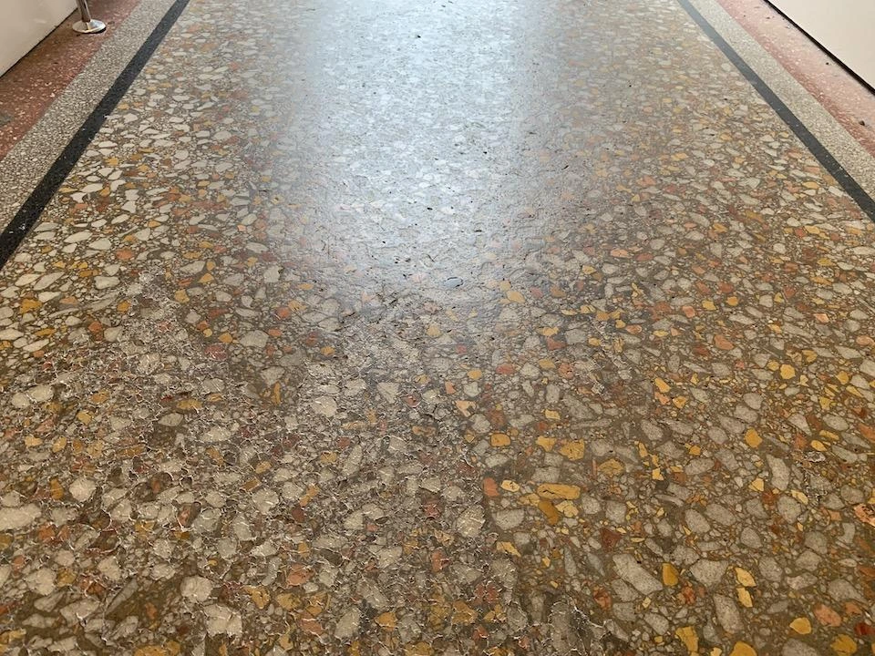

Mosaic floor polishing is done in stages: the floor is inspected, cracks and hollows are filled, then it is ground from coarse to fine, honed, polished and sealed. Small rooms can often be finished in a day or two. Time and cost depend on floor area, condition and the finish you want.
Need the service itself? See mosaic floor polishing in Bangalore.
Old mosaic floors are tough and long-lasting, and many Bangalore homes still have them. Over the years they turn dull, yellow or patchy. Before you hire anyone, it helps to know what mosaic tiles polishing actually involves, how long it takes and why quotes differ. This guide explains the process step by step, so you know what to expect and what to ask.
At a glance: the mosaic polishing process
| Stage | What happens | Why it matters |
|---|---|---|
| Inspection | The floor is checked for cracks, hollows, loose patches and old coatings. | Decides what repairs and how many grinding passes are needed. |
| Repair | Cracks and hollows are filled and allowed to set. | Gives an even surface to grind. |
| Grinding | Machines grind the floor in stages, from coarse to fine abrasives. | Removes the worn, stained or yellowed top layer and levels the surface. |
| Honing | Fine abrasives smooth the floor. | Removes grinding marks and gives an even, soft sheen. |
| Polishing | Finer polishing brings up the shine. | Gives the final gloss. |
| Sealing | A suitable sealer or protective coat is applied where appropriate. | Helps the floor resist stains and wear. |
| Final cleaning | Slurry is removed and the floor is cleaned and checked. | Leaves the floor ready for use after drying. |
1. What is a mosaic floor?
A mosaic floor, also called a chips or terrazzo-type floor in many homes, is made of marble or stone chips set in cement and then ground smooth. Because the floor is laid as a surface and ground on site, it can be ground and polished again many years later. This is why mosaic polishing is a restoration job, not a replacement.
Terrazzo is closely related. See our guide to terrazzo floor polishing and care for how it differs.
2. The mosaic polishing process, step by step
Step 1: Inspection
The team looks at the floor in good light. They check for cracks, hollows, loose patches, old wax or coatings, and stains. They also check how thick and how worn the floor is. This decides what the job needs.
Step 2: Preparation and protection
Furniture is moved, doors and skirting are protected, and the area is cleaned. Water and power are set up. Grinding with water creates slurry, so the work area is planned to contain it.
Step 3: Repairs
Cracks, pits and hollows are filled with a suitable material and left to set. If they are not filled first, they show as dark lines or holes after polishing.
Step 4: Grinding
Heavy machines with abrasive stones grind the floor in stages. Coarse abrasives remove the worn or stained layer and level the floor. Finer abrasives follow. Each pass removes the marks left by the one before it.
Step 5: Honing
Honing uses fine abrasives to smooth the surface and give it an even, soft sheen. A honed floor is smooth but not yet glossy.
Step 6: Polishing
The floor is polished with finer abrasives and polishing compounds to bring up the shine. The final gloss depends on the quality of the earlier stages.
Step 7: Sealing
Many floors are then sealed or coated to help them resist stains and wear. The right product depends on the floor and the finish you want.
Step 8: Final cleaning and check
The slurry is removed, the floor is cleaned and the result is checked with you. You are given aftercare advice.
3. Is your old mosaic floor suitable for polishing?
Most old mosaic floors can be polished, but not all. Look for these signs.
- Good candidates: dull, worn, yellowed or stained floors that are firm and mostly intact.
- Needs repair first: cracks, hollows or small loose patches.
- Needs a closer look: floors that sound hollow when tapped, that move, or that are cracking in many places. This can point to a base problem that polishing will not fix.
- Not just dirty: if the floor only looks dirty, a deep clean may be enough.
A one-time deep cleaning can show whether the dullness is only dirt before you decide on grinding.
4. Why do old mosaic floors turn yellow?
Yellowing is common on old floors. The usual causes are:
- Old wax or floor polish that has aged and discoloured.
- Dirt and grime trapped in the surface.
- An old sealer or coating that has yellowed.
- Stains from water, rust or spills that soaked in.
If the yellowing sits on the surface, grinding removes it. If a stain has soaked deep, it may need extra passes or may not fully disappear.

5. How long does mosaic polishing take?
There is no single answer. The time depends on:
- The floor area and the number of rooms.
- The condition of the floor and how many grinding passes it needs.
- The amount of crack and hollow repair, and the time the filler needs to set.
- The finish you want: honed or high gloss.
- Whether a sealer is applied, and the drying time.
- Access, power, water and how much furniture must be moved.
Small rooms can often be finished in a day or two. A whole home takes longer. Ask your contractor for the time for your floor, and how long you should wait before heavy use or furniture.
6. What affects the cost of mosaic polishing?
Two floors of the same size can be priced differently. These are the factors that matter.
| Factor | How it affects the cost |
|---|---|
| Floor area | A larger area needs more time and materials. |
| Condition | A badly worn, stained or uneven floor needs more grinding passes. |
| Repairs | More cracks and hollows mean more filling and setting time. |
| Finish | A high-gloss finish needs more stages than a honed finish. |
| Sealing or coating | Adds a material and a step. |
| Access and furniture | Upper floors, narrow access and heavy furniture add effort. |
| Number of visits | Large homes may be done in phases. |
We do not quote a price without seeing the floor, because the same size can need very different work. Send photos on WhatsApp for a first view, and a site visit settles the details.
7. How to prepare your home
- Remove small items, rugs and breakable things from the area.
- Move furniture or agree with the team who will move it.
- Make sure there is access to water and power.
- Protect or remove items on lower shelves, curtains and anything sensitive to dust and moisture.
- Keep children and pets away from the work area.
- Keep the room ventilated, and plan for noise during grinding.
- Agree the working hours with the team and your society, if you live in an apartment.
- Photograph the floor before work starts.
8. What to expect during and after the work
- Noise and some mess while the machines run. The slurry should be contained and removed.
- The floor may look uneven at first, and the shine appears in the later stages.
- Keep off the floor until it is dry, and follow the team's advice before moving furniture back.
- Do not drag furniture. Use pads under legs.
- Clean with a neutral, floor-safe cleaner. Avoid acids on mosaic and stone floors.
- Wipe spills quickly, and use door mats to keep grit off the floor.
For more on how natural stone behaves, see why natural stone does not always polish evenly.
9. How to choose a mosaic polishing contractor
Ask these questions before you say yes.
- Will you inspect the floor or see photos before giving a quote?
- What stages will you follow, and what machines do you use?
- How will you control the slurry and protect doors and furniture?
- How do you repair cracks and hollows?
- Is sealing included, and what product do you use?
- How long will the work take, and when can I use the floor?
- What aftercare do you recommend?
Be careful if someone offers a very low price without seeing the floor, skips grinding stages or cannot explain the steps.
10. Common mistakes to avoid
- Polishing a floor that only needs cleaning.
- Skipping crack and hollow repairs before grinding.
- Accepting a quote without a site visit or photos.
- Using acid cleaners on a mosaic floor.
- Walking or moving furniture on the floor before it is dry.
- Re-polishing too often, which removes more of the floor than needed.
How EFCS can help
EFCS provides mosaic floor polishing for homes and offices in Bangalore. You can read about the service on our mosaic floor polishing in Bangalore page. If your floor is only dirty, our one-time deep cleaning services may be enough. If you are not sure, send us photos on WhatsApp or contact us.
Frequently asked questions
How is a mosaic floor polished?
A mosaic floor is inspected, cleaned and repaired, then ground in stages with machines, starting with coarse abrasives and moving to finer ones. After grinding it is honed, polished and usually sealed. Each stage removes the marks left by the one before it, which is why the steps cannot be skipped.
How long does mosaic floor polishing take?
It depends on the floor area, the condition of the floor and how many grinding passes it needs. Small rooms can often be finished in a day or two, and a whole home takes longer. The floor also needs time to dry and cure before heavy use, and your contractor should tell you how long.
What affects the cost of mosaic polishing?
The main factors are the floor area, how worn or damaged the floor is, how many cracks and hollows need filling, the finish you want, whether a sealer is applied, access and the number of rooms. Exact cost needs photos or a site visit, so be careful with any quote given without seeing the floor.
Can an old, yellowed mosaic floor be restored?
Often, yes. Yellowing usually comes from old wax or polish, trapped dirt or an ageing sealer. If it sits on the surface, grinding and polishing can remove it. If the floor is cracked, very thin or loose, repairs may be needed first, and a site check will tell you what is possible.
Is mosaic floor polishing messy?
It can be. Grinding uses water and creates slurry, and the work makes noise. A good team protects doors, skirting and furniture, controls the slurry and cleans the floor at the end. You can reduce the mess by clearing the room and keeping access to water and power.
How often should a mosaic floor be polished?
There is no fixed interval. A mosaic floor in good condition that is cleaned with the right products may go many years between polishes. Polish again when the surface looks worn or dull even after a proper deep clean. Re-polishing too often removes more of the floor than needed.
Can a cracked mosaic floor be polished?
Usually, after the cracks are repaired. Cracks and hollows are filled before grinding so the surface becomes even. Wide cracks, loose patches or a moving floor may point to a base problem, and polishing will not fix that.
Does EFCS offer mosaic polishing in Bangalore?
Yes. EFCS offers mosaic floor polishing for homes and offices in Bangalore. Send photos of your floor on WhatsApp or call us, and we will explain the process and next steps for your floor.
Related guides
- Terrazzo floor polishing and care
- Why natural stone does not always polish evenly
- Choosing the best floor polish for different types of flooring
- Grouting problems explained
- All EFCS blogs
This guide is general information. Time and results depend on the floor and its condition. Ask for an inspection before you decide.